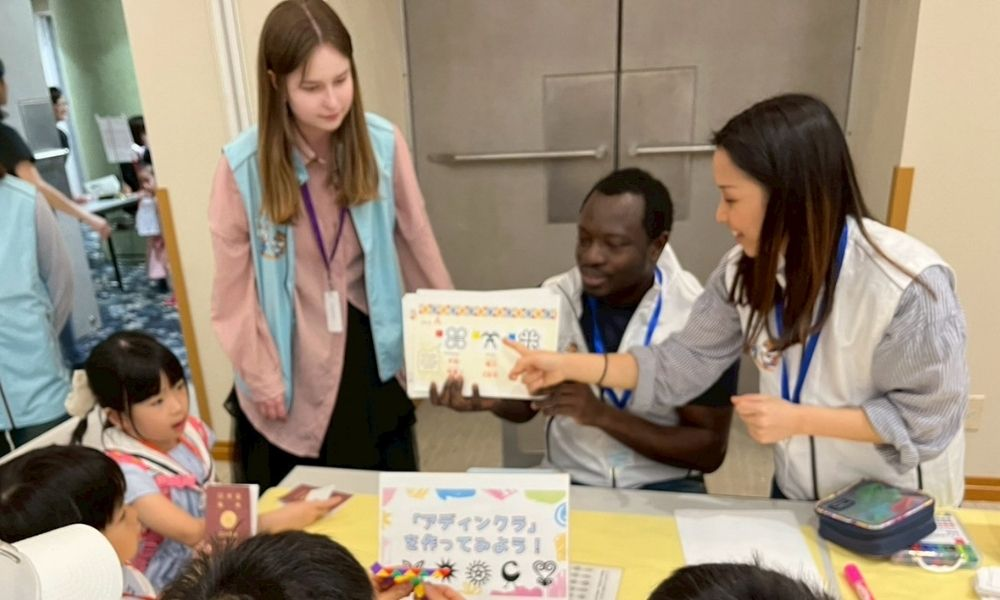

ABOUT US
ナタデココについて
NPOナタデココ私たちの想い・歩み・仲間たちをご紹介します。

子どもの心に 世界地図を描く。
NPOナタデココは、「子どもの心に世界地図を描く」というスローガンのもと、全国の子供たちに異文化に触れる体験を届ける活動しています。
テレビやインターネットで「世界」に触れる機会は増えましたが、リアルな人との交流を通じた体験はまだまだ限定的です。 私たちは、外国人メンバーとの直接の交流を通じて、子供たちが「世界って広いな。もっと知りたいな。」と感じられる場をつくっています。
一人でも多くの子供たちに会えるのを楽しみにしています！
基本情報
団体の基本的な情報をご案内します。
| 団体名 | 特定非営利活動法人 ナタデココ（NPO NataDeCoco） |
|---|---|
| 設立 | 2021年8月（2023年6月法人化） |
| 所在地 | 〒106-0093 東京都千代田区平河町１－６－１５ USビル８F ※ 郵便物のお宛先はこちらへお送りください。 |
| 代表者 | 代表理事 加藤 頌太 |
| 事業内容 |
|
| 会員・スタッフ数 | ボランティアスタッフ 34名、外国人スタッフ 342名（2026年4月現在） |
| 活動エリア | 全国（首都圏・近畿圏を中心に全国対応） |
| メール | info@natadecoco.org |
| 定款 | |
| 活動報告 | |
| 財務報告 |
沿革
ナタデココのあゆみをご紹介します。
「グローバル×子ども×地方創生」をテーマに任意団体ナタデココ設立。最初は３人での活動スタートでした。毎週のようにミーティングを重ね、自分たちの想いを固めていきました。
東京都港区にて初のオンライン教室を実施。コロナ禍のため対面はかなわなかったものの画面越しに子供たちの笑顔に触れることができました。
岐阜県郡上市とのオンライン教室を実施。キューバ、アメリカ、フランス出身の外国人メンバーも加わり、外国の文化に触れるプログラムを開始。
東京都千代田区にて初の対面イベントを開催。20人以上の子供たちが集まり、外国のダンスや音楽に触れるプログラムを実施。
三重県桑名市にて初の地方対面イベントを開催。海外料理を調理し、味覚で異文化に触れました。名古屋大学、立命館大学等の外国人留学生も多数参加。
葛飾区立上千葉小学校にて初となる年間プログラム提供開始。継続してのプログラムにより子供たちの成長を感じることができました。
先生が自分で使える教材「文化交流キット」を開発・販売開始。全国47都道府県にプログラムを広がることを祈りながら、一つずつ真心こめて作成します。
異文化コミュニケーション学会にて実践報告実施。とても緊張しましたが、最先端の研究を行う学者と議論する貴重な機会でした。
オンラインサロン「Coco Salon the World」始動。どこからでも多文化に触れることのできるコミュニティを目指して試行錯誤を開始しました。
長崎県壱岐市にて初の離島プログラム開催。福岡の外国人メンバーと壱岐を訪問し、現地の子供たちに異文化に触れる体験を届けました。ナタデココメンバーもBBQや海水浴を通じて地元の方々との交流を楽しみました。
累計参加児童・生徒数5,000名を突破。引き続き全国への普及に向けて活動を加速中。